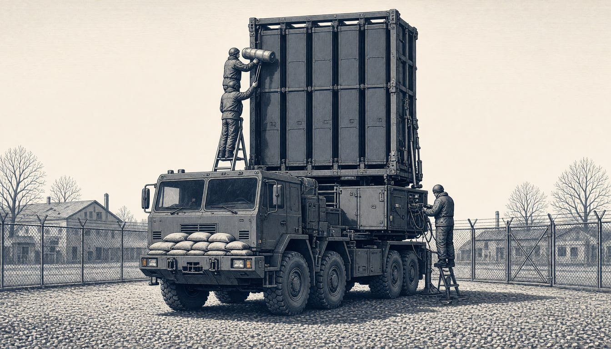

US tells Europe to fund Ukraine's arms and says deep strikes are not ending the war
Washington wants European allies to carry the cost of arming Ukraine while it prioritises its own readiness elsewhere. Germany's defence minister called the US warning on deep strikes "quite a stupid thing".

At the Ukraine Defence Contact Group in Brussels, US Under Secretary of War for Policy Elbridge Colby said Europe must take primary responsibility for funding Ukraine's support, including robust funding for the PURL initiative, as Washington prioritises its own readiness in the Indo-Pacific and the Western Hemisphere. Colby also said deep strikes aimed at the Russian population have failed to end the war or blunt Russia's advances.
NATO Secretary General Mark Rutte said that through PURL the US has provided the vast majority of Patriots and 75% of air-to-air missiles to Ukraine in recent months. Washington has stopped direct funding for new deliveries, leaving Europe and Canada to pay, including for American-made weapons. Rutte called on allies to continue funding PURL, the Comprehensive Assistance Package and the NSATU Trust Fund. Europe is being asked to carry the cost while the hardware stays American.
It was the group's 37th meeting, attended by defence ministers, Ukraine's leadership and Colby. Rutte framed it as the final opportunity this year for ministers to pledge support to Ukraine before a winter he expects to be hard. He said Putin's principal objective is to win in Ukraine and to weaken Europe by generating insecurity and sowing division. In his words, Putin will not win in Ukraine and will not break NATO's support for the country.
German Defence Minister Boris Pistorius called the US warning that Ukraine's deep strikes risk escalation "quite a stupid thing". The criticism, he said, should fall on Russia's nightly strikes on civilian energy and heating infrastructure, which he called "kind of terrorism". Rutte said NATO agrees that Ukraine must do everything to defend itself against attacks aimed mainly at civilian infrastructure, and noted successes at the front. Ukrainian Defense Minister Yevhen Khmara set out Kyiv's line: 62% of funding should go to drones, including FPV, Middle Strike, Deep Strike and logistics drones, with joint production facilities for partners to invest bilateral aid in.
Colby drew a line between kinds of strikes. He said support should enable Ukraine to hold the line of battle, and that strikes on Russia's war-making machinery can help slow its advance. Deep strikes, especially those on civilian infrastructure such as Wildberries, have probably hardened the Russian public's resolve and the Kremlin's willingness to escalate, he said. Ukraine says Wildberries supplies equipment and components used by the Russian military, which the company denies.